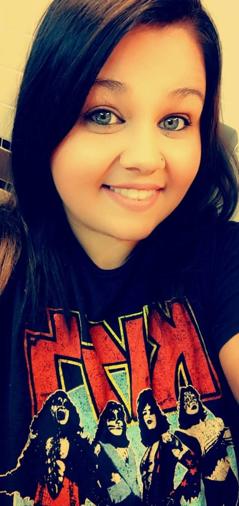

Choctaw · Moore · Edmond · Prague, Oklahoma
Just a mom with a
passion for making a difference
We take donations of clothes and items others no longer need, and put them straight into the hands of mamas who need them. When a mom reaches out, we strive to meet that need — and while we're based around Choctaw, Moore, Edmond, and Prague, we serve mamas all over Oklahoma. If you reach out from anywhere in the state, we'll gather what's needed and make the drive.
Who we are

Hi, I'm Madison.
I'm not a nonprofit or any kind of 501c3 organization — just a mom who's been there. I grew up in DHS custody and had my first child at 19, with no family support, so I know exactly what it's like to be a mom with no village and nowhere to turn.
Since then I've taken in each of my six siblings over the years — the youngest still lives with me. I've worked as a behavioral health tech for ten years with teens facing suicidal ideation, anger, and substance struggles, and I'm now a registered behavior technician helping individuals with autism build the skills to be independent in their community.
Okie Darling Co is where all of that comes together: by gathering and redistributing gently used clothing and necessities to mothers navigating fresh starts, sometimes with nothing at all. In addition to material support, our organization strives to assist with utility cutoff interventions, gas, and grocery provisions as funding allows.
Our organization operates exclusively through the generous support of community contributions and receives no government funding or grants. Any operational expenses not covered by public philanthropy are personally subsidized to ensure continuity of our mission.
— Madison, founder
Right now
Current Needs
We're seeing a big increase in requests for girls' sizes 4T–7/8 and boys' size 10/12 — but truly, we're grateful for anything.
Not sure if something qualifies? Send it anyway — if we can't use it for a mom directly, we'll find a way to put it toward the mission.
Ways to help
How to Give
Porch Pickup
Convenient, no-contact pickup available around Choctaw, Moore, Edmond, and Prague. Outside that area? Message us — we serve mamas all over Oklahoma and will arrange a drop-off or delivery.
Message Us Directly
Facebook is the fastest way to reach us — or drop us a line by email or phone.
Chip In Toward the Mission
We're raising money for a small building on our property so we can keep organizing donations and helping mamas in need. Every bit counts.
- Venmo: @Okiedarlingco
- CashApp: $Okiedarlingco
- GoFundMe — Building Fund
Christmas
Angel Tree
Every year we run an Angel Tree so local kids have something to open on Christmas morning. "Whatever you did for one of the least of these brothers and sisters of mine, you did for me." — Matthew 25:40
Applications open September 1st.
Sponsor a Child or Family
Be matched with a child's wishlist or a family in need. You can also donate items, gift cards, or make a monetary donation instead.
Message to SponsorApply for Help
If your family could use a little extra help this Christmas, applications open September 1st. All information is kept as private as possible.
Message to ApplyYou're not alone
Are You a Mom in Need?
Life can be tough without a village — and this village is open to you. Reach out and tell us what's going on. Big or small, we'll do what we can to help meet the need.
Message Us on Facebook